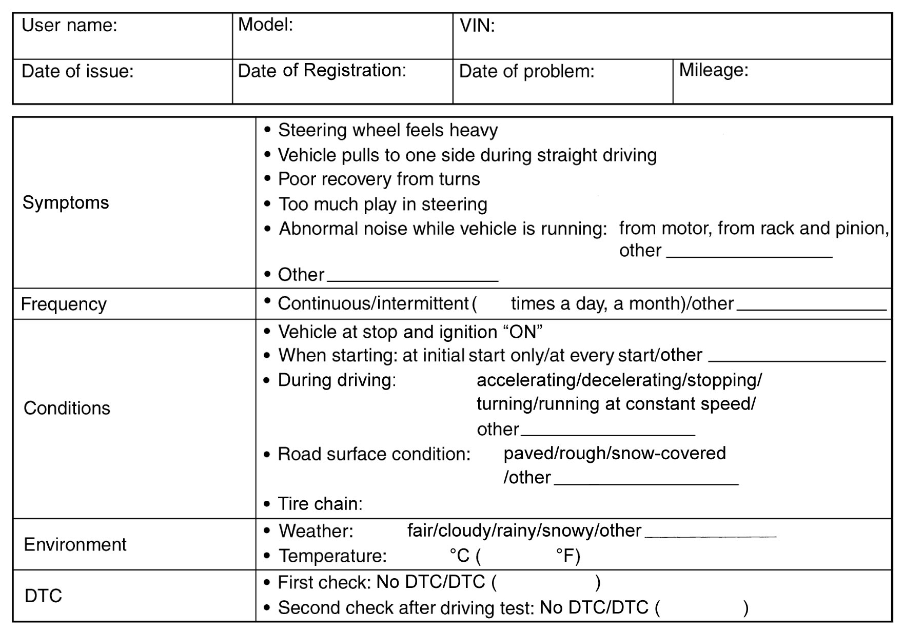

6C
| P/S System Check |
If you do not select a suitable route and take proper precautions when performing a road test, an accident can occur.
•Select a level road with no traffic to minimize the risk of accident.
•Perform the test extremely carefully.
•Perform the road test with 2 persons, a driver and a tester.
•Perform the test extremely carefully.
•Perform the road test with 2 persons, a driver and a tester.
Refer to the following items for the details of each step.
| Step | Action | Yes | No |
|---|---|---|---|
| 1 |
Customer complaint analysis
1)Perform customer complaint analysis.
Was customer complaint analysis performed?
|
Go to Step 2.
|
Perform customer complaint analysis.
|
| 2 |
DTC check, record and clearance
1)Check for DTC (including pending DTC).
Is there any DTC?
|
Print DTC or write it down and clear it referring to DTC Clearance, and then go to Step 3.
|
Go to Step 4.
|
| 3 |
Visual inspection
1)Perform visual inspection.
Is there any faulty condition?
|
Repair or replace defective part, and then go to Step 11.
|
Go to Step 5.
|
| 4 |
Visual inspection
1)Perform visual inspection.
Is there any faulty condition?
|
Repair or replace defective part, and then go to Step 11.
|
Go to Step 8.
|
| 5 |
Trouble symptom confirmation
1)Check trouble symptom.
Is trouble symptom identified?
|
Go to Step 6.
|
Go to Step 7.
|
| 6 |
Rechecking and record of DTC
1)Recheck for DTC.
Is there any DTC(s)?
|
Go to Step 9.
|
Go to Step 8.
|
| 7 |
Rechecking and record of DTC
1)Recheck for DTC.
Is there any DTC(s)?
|
Go to Step 9.
|
Go to Step 10.
|
| 8 |
Steering symptom diagnosis and P/S system symptom diagnosis
1)Check and repair.
•Steering symptom diagnosis:
•P/S system symptom diagnosis: Are check and repair complete?
|
Go to Step 11.
|
Go to Step 10.
|
| 9 |
Troubleshooting for DTC
1)Check and repair.
Are check and repair complete?
|
Go to Step 11.
|
Check and repair defective part, and then go to Step 11.
|
| 10 |
Intermittent problem check
1)Check for intermittent problems.
Is there any faulty condition?
|
Repair or replace defective part, and then go to Step 11.
|
Go to Step 11.
|
| 11 |
Final confirmation test
1)Clear DTC if any.
2)Perform final confirmation test.
Is there any problem symptom, DTC or abnormal condition?
|
Go to Step 6.
|
End.
|
Step 1: Customer Complaint Analysis
Record details of the problem (failure, complaint) and how it occurred as described by the customer. For this purpose, use of such a questionnaire form shown below will facilitate collecting information for proper analysis and diagnosis. Check if the problem described in “Customer questionnaire” occurs actually in the vehicle if necessary.
(This step should be performed with the customer if possible.)
NOTE:
This form is a standard sample. It should be modified according to conditions characteristic of each market.
Customer questionnaire form (Example)

 "Expand image")
Step 2: DTC Check, Record and Clearance
Check DTC (current and pending DTC) referring to DTC Check.
If DTC is indicated, print or write down the DTC and then clear the DTC referring to DTC Clearance.
Step 3 and 4: Visual Inspection
Visually check P/S warning light for proper operation, connectors for proper condition and each part condition referring to Visual Inspection.
Step 5: Trouble Symptom Confirmation
Based on Step 1: Customer Complaint Analysis and Step 2: DTC Check, Record and Clearance, check trouble symptoms. Also, check trouble symptoms by performing test drive and turning steering wheel fully to right and left with vehicle stopped.
Step 6 and 7: Rechecking and Record of DTC
Refer to DTC Check for checking procedure.
Step 8: Steering Symptom Diagnosis and P/S System Symptom Diagnosis
Perform basic steering system check first.  Near the end of flow, check the parts of the system suspected as a possible cause referring to P/S System Symptom Diagnosis and based on symptoms appearing on the vehicle (symptoms obtained through steps of customer complaint analysis, trouble symptom confirmation and/or basic P/S system check). Repair or replace faulty parts.
Near the end of flow, check the parts of the system suspected as a possible cause referring to P/S System Symptom Diagnosis and based on symptoms appearing on the vehicle (symptoms obtained through steps of customer complaint analysis, trouble symptom confirmation and/or basic P/S system check). Repair or replace faulty parts.
Step 9: Troubleshooting for DTC
Perform applicable DTC troubleshooting and repair or replace faulty parts.
Step 10: Intermittent Problem Check
Check parts that are prone to cause intermittent problem (e.g. wire harness, connector, etc.), referring to Intermittent Connection and Poor Contact Inspection and related circuit of DTC recorded in Step 2.
Step 11: Final Confirmation Test
Check that the problem symptom has disappeared and the P/S system is free from any abnormal conditions. If what has been repaired is related to the DTC, clear the DTC once, perform DTC confirmation procedure and check that no DTC is indicated.